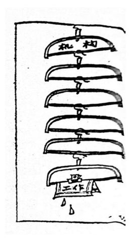
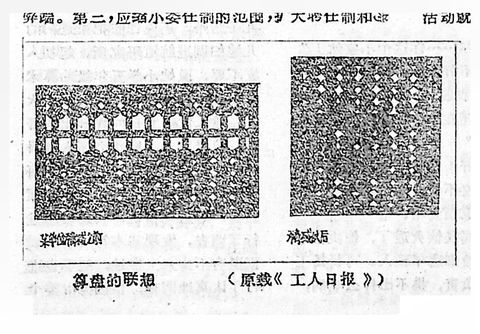
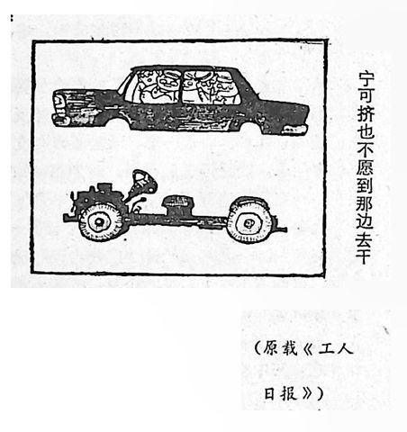
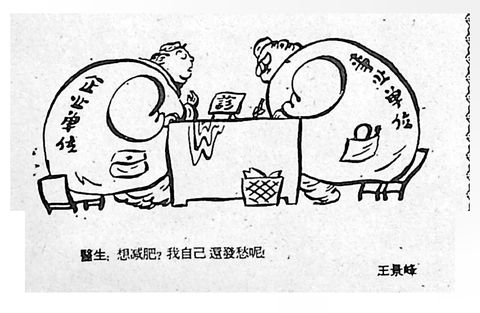
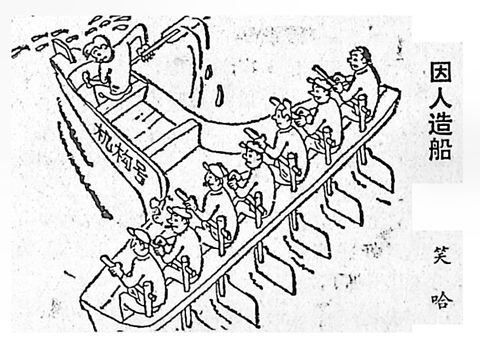
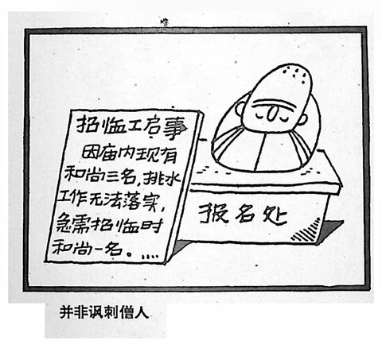

Overstaffing and overlapping agencies 18
-
 今天出门戴哪顶帽子呢？ · Which Hat Shall I Wear Today?
今天出门戴哪顶帽子呢？ · Which Hat Shall I Wear Today?
Li Bo 李波. Renshi (Personnel), 1985 no. 3 (whole no. 3), p. 44. -

无题（机构） · Untitled (“Agencies”)
Unattributed. Renshi (Personnel), 1985 no. 3 (whole no. 3), p. 44. -
 机关"运动会" · The Office "Sports Meet"
机关"运动会" · The Office "Sports Meet"
Xi Feng 西风. Renshi (Personnel), 1986 no. 1 (whole no. 4), inside back cover. -

算盘的联想 · Thoughts on an Abacus
Unattributed. Renshi (Personnel), 1986 no. 2 (whole no. 5), p. 43. Reprinted from Gongren ribao (Workers' Daily). -

宁可挤也不愿到那边去干 · Rather Squeeze In Than Go and Work Over There
Unattributed. Renshi (Personnel), 1986 no. 4 (whole no. 7), p. 42. Reprinted from Gongren ribao (Workers' Daily). -
 群仙荟萃 · A Gathering of Immortals
群仙荟萃 · A Gathering of Immortals
Gao Feng 高枫. Renshi (Personnel), 1987 no. 2 (whole no. 17), p. 11. -
 机关干部超编及其改革（题图） · Overstaffing in Government Offices and Its Reform (header drawing)
机关干部超编及其改革（题图） · Overstaffing in Government Offices and Its Reform (header drawing)
Unattributed. Renshi (Personnel), 1987 no. 3 (whole no. 18), p. 27. -

瘦不下来 · Can't Slim Down
Wang Jingfeng 王景峰. Renshi (Personnel), 1987 no. 6 (whole no. 21), p. 46. -
 第四个和尚 · The Fourth Monk
第四个和尚 · The Fourth Monk
Wang Letian 王乐天. Renshi (Personnel), 1987 no. 7 (whole no. 22), inside back cover. -
 无题 · Untitled
无题 · Untitled
Wang Letian 王乐天. Renshi (Personnel), 1987 no. 10 (whole no. 25), p. 44. Reprinted from Renmin ribao, haiwai ban (People's Daily, Overseas Edition). -
 空城计下集 · The Empty City Stratagem, Part Two
空城计下集 · The Empty City Stratagem, Part Two
Hua Junwu 华君武. Renshi (Personnel), 1987 no. 12 (whole no. 27), p. 39. -
 一呼百应 · One Call, a Hundred Answers
一呼百应 · One Call, a Hundred Answers
Li Shimin 李时民. Renshi (Personnel), 1988 no. 3 (whole no. 30), p. 45. -
 某办公室即景 · A Scene in a Certain Office
某办公室即景 · A Scene in a Certain Office
Drawn by Jiang Peifeng 江沛丰; poem by Ma Liang 马良. Renshi (Personnel), 1988 no. 4 (whole no. 31), p. 48. -
 无题 · Untitled (“Cut any more and our section won't have enough hands”)
无题 · Untitled (“Cut any more and our section won't have enough hands”)
Sun Xiaoming 孙小鸣. Renshi (Personnel), 1988 no. 8 (whole no. 35), p. 37. -

因人造船 · Building the Boat to Fit the Crew
Xiao Ha 笑哈. Renshi (Personnel), 1988 no. 8 (whole no. 35), p. 47. -
 婆婆穿针图 · Mothers-in-Law Threading a Needle
婆婆穿针图 · Mothers-in-Law Threading a Needle
Zou Jingquan 邹敬泉. Renshi (Personnel), 1989 no. 9 (whole no. 48), inside back cover. -
 无题 · Untitled (“Atomic nucleus: Wow, faster than my fission!”)
无题 · Untitled (“Atomic nucleus: Wow, faster than my fission!”)
Supplied by Jiang Sizhong 蒋思忠. Renshi (Personnel), 1989 no. 11 (whole no. 50), inside back cover. -

并非讽刺僧人 · Not a Satire on Monks
Wang Yan 王燕. Renshi (Personnel), 1990 no. 8 (whole no. 59), inside back cover.